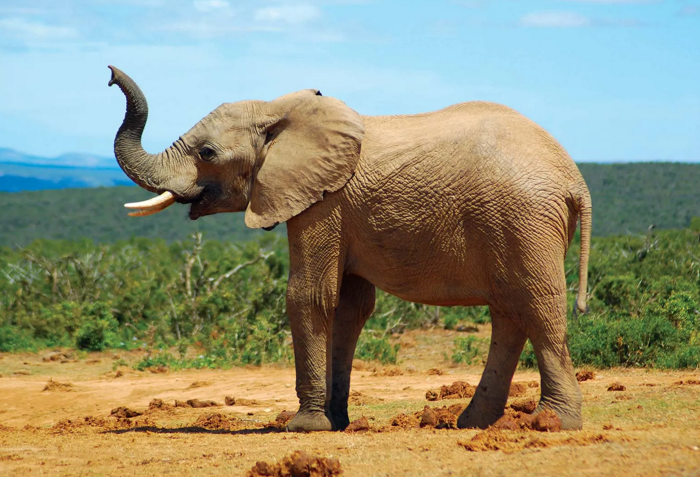
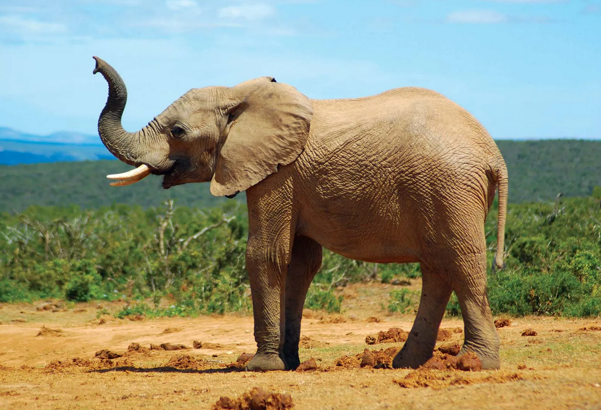
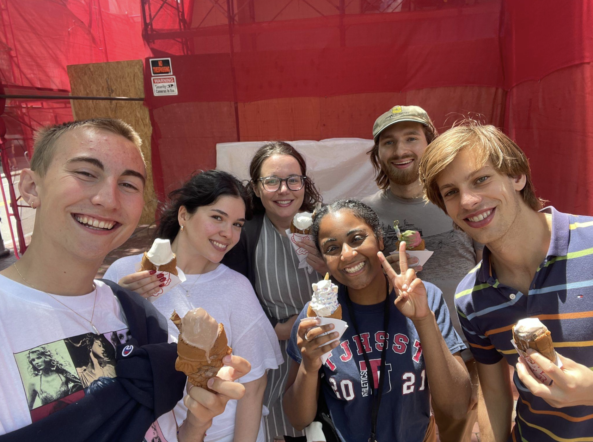

knitr::include_graphics("figs/elephant.png")
Introductions
Course goals
Course expectations + syllabus
Explore course website
Preparing for Thursday
It has become harder and harder to stay focused over the last decade given the massive rise in wearable and mobile technology.
If you’ll be using a laptop to take notes, please avoid distractions to yourself and classmates by silencing notifications and avoiding checking emails, news, social media, etc.
Please leave your phone on silent and put it somewhere where it won’t distract you.
knitr::include_graphics("figs/elephant.png")
In groups of ~3, introduce yourselves to each other.
(name, hometown, major, favorite food, etc.)
countdown::countdown(minutes = 3)03:00
I’m Grayson, a PhD student in Forestry.
Before coming to Michigan State, I worked as a Data Scientist contracting for the USDA Forest Service.
Before that, I majored in Mathematics & Statistics at Reed College.
knitr::include_graphics("figs/mymap.png")
I ❤️ teaching, especially about Data Science + Forestry.
In the past, I’ve co-directed a Forestry Data Science lab for undergraduates.
I ❤️ teaching, especially about Data Science + Forestry.
In the past, I’ve co-directed a Forestry Data Science lab for undergraduates.
knitr::include_graphics("figs/ufds.png")
knitr::include_graphics("figs/Data_Science_VD.png")
knitr::include_graphics("figs/datasciwiki.png")knitr::include_graphics("figs/dashboard.png")R packages, like saeczi, which an undergraduate wrote while doing Forestry Data Science research with meknitr::include_graphics("figs/saeczi.gif")
Take this class and engage thoughtfully with the material. ✅
Take FOR 372 (offered this spring) to gain more domain-specific statistical expertise.
A wide variety of knowledge in statistics, computer science, and your domain field of expertise (forestry) is important.
Engage in undergraduate research opportunities!
R programming language,R programming skills
R and tidyverse approachesggplot2countdown::countdown(minutes = 2)02:00
Introduction to Forestry Data Analysis with R, by Andrew O. Finley and Jeffrey W. Doser. Available free, online: www.finley-lab.com/files/ifdar/
R, RStudio, a laptopR is a free and open source programming language, and RStudio is an Integrated Development Environment (IDE) which allows for streamlined use of the R programming language. Both are free to install, and installation instructions will be provided in this course. A laptop that can run R and RStudio is required for this course.
knitr::include_graphics("figs/schedule.png")“…a key goal of this course is for you to learn how to thoughtfully, ethically, and independently write code and extract knowledge from data”
AI tools are being used by others to write code, but as Data Scientists, we must write code responsibly
At this stage of learning how to code, AI tools inhibit learning and understanding.
knitr::include_graphics("figs/elephant.png")Come to class with a laptop
Complete Lecture Ticket 1 before lecture on Thursday.